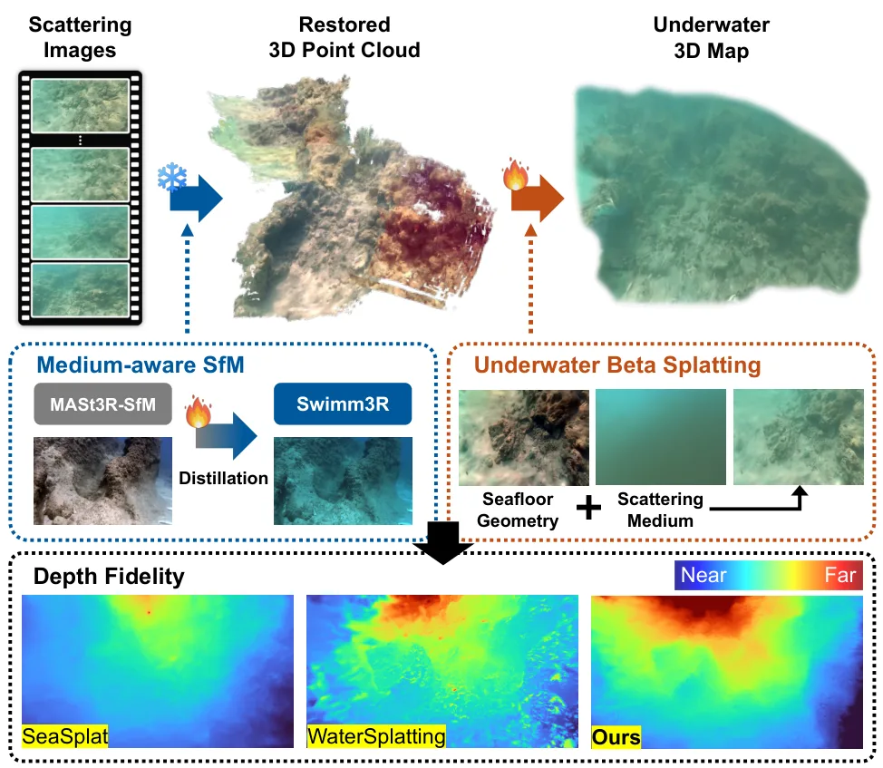
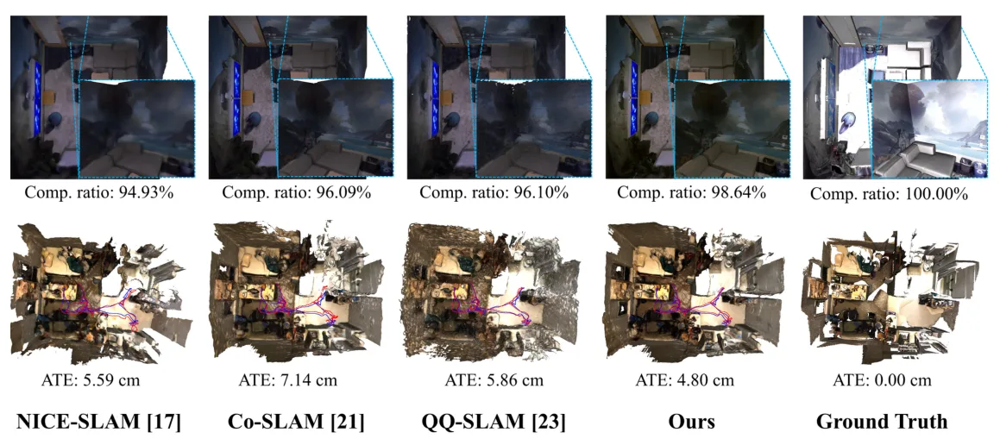
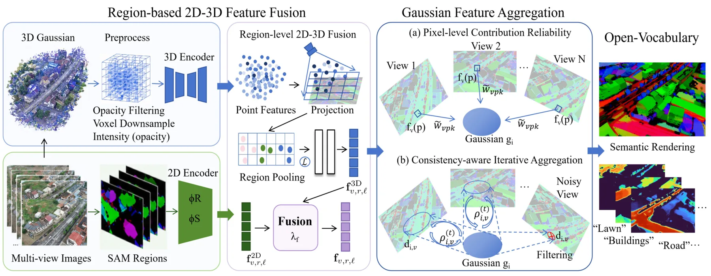
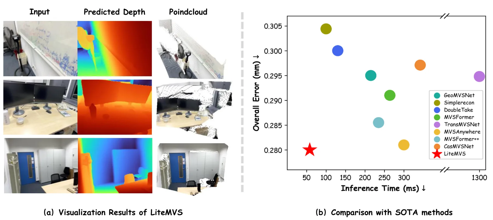
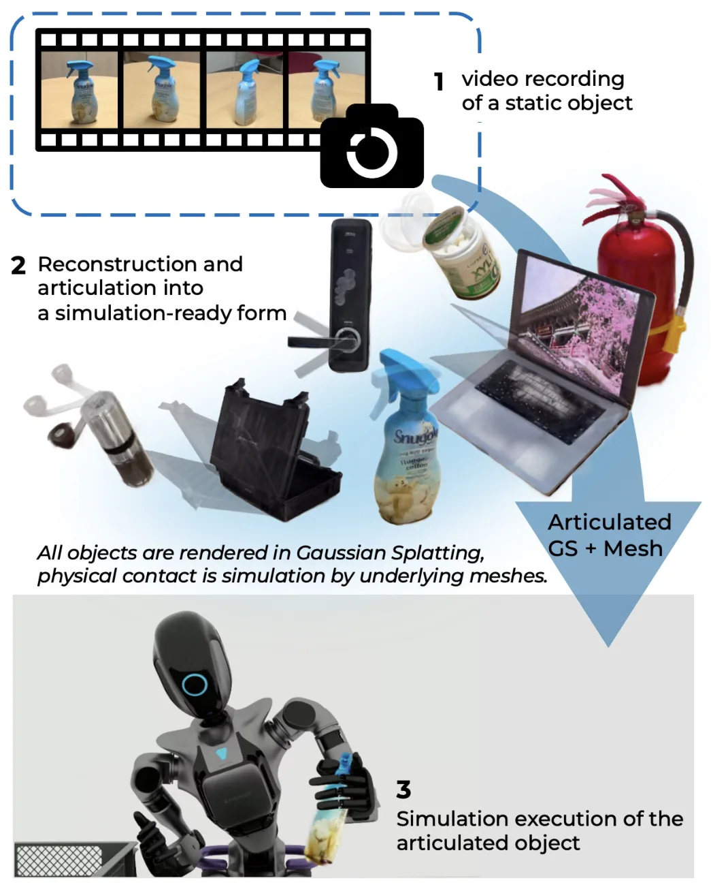
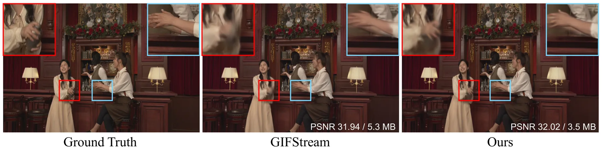
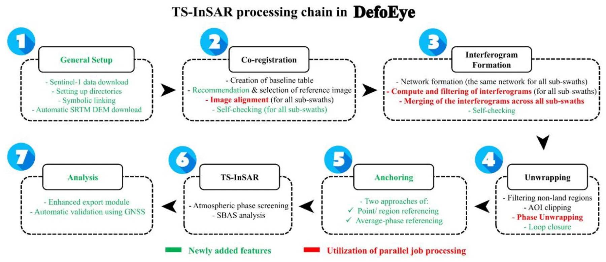
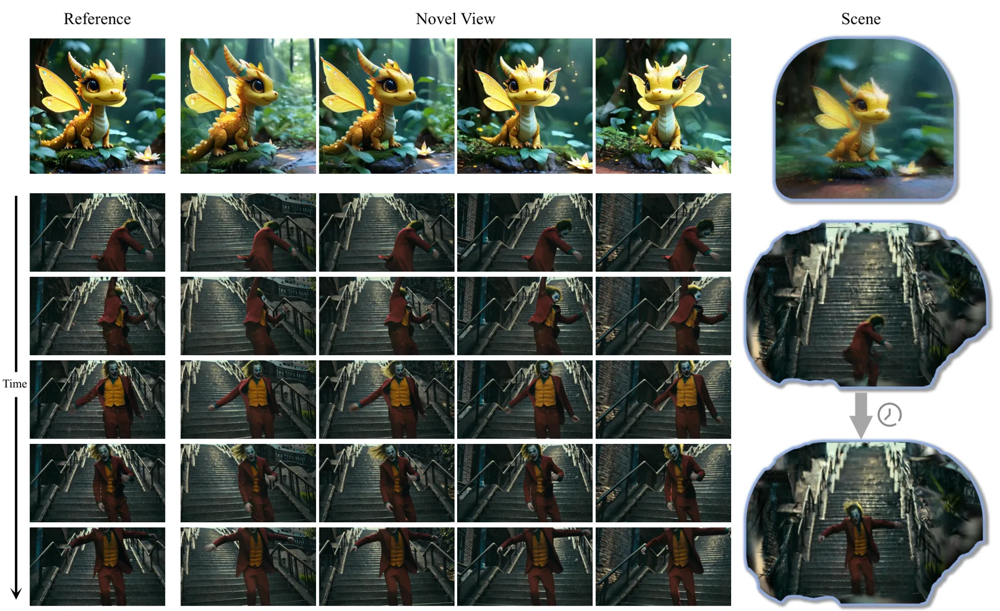
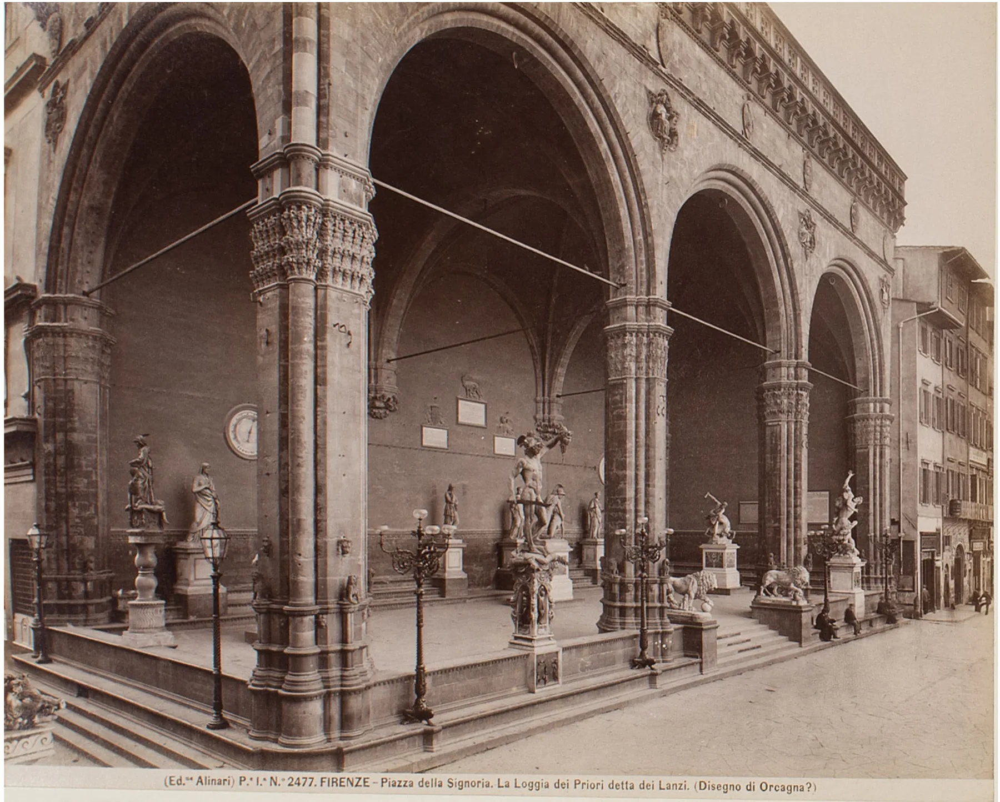

新论文 · 日期 2026-08-02 · score 21 · cs.CV, cs.RO, eess.IV
作者：Minseong Kweon, Junaed Sattar
评分 9.2/10
水下三维重建SfM相机位姿Beta Splatting散射建模
一句话工作总结：把水下成像物理、相机位姿、点云恢复与 Beta Splatting 联合建模，直接针对散射介质中的 SfM 失效。
Swimm3R 将介质感知 SfM 与 Underwater Beta Splatting 统一起来，处理水下散射和衰减导致的重建失效。方法把空气中几何先验蒸馏到前馈骨干，并以物理 head 回归水下成像参数、相机位姿和恢复点云；Beta primitives 与散射感知几何梯度用于稳定表达水下几何。在 Barbados 水下视频数据集上，相比 WaterSplatting，平均 PSNR 提升 1.47 dB，下…
We propose Swimm3R, a unified framework that combines medium-aware structure-from-motion (SfM) with Underwater Beta Splatting to address scattering- and attenuation-induced failures in underwater 3D reconstruc…

新论文 · 日期 2026-08-03 · score 20 · cs.CV
作者：Wenxuan Ji, Jin Xiao, Xiaoguang Hu, Jiaqi Shi
评分 9/10
RGB-D SLAM神经稠密建图Bundle Adjustment关键帧选择紧凑表示
一句话工作总结：以紧凑 P-H 混合场景表示和覆盖长短时间尺度的互补窗口，在固定在线预算内提升 RGB-D 稠密建图与跟踪。
CHOW-SLAM 面向在线资源受限的神经稠密 RGB-D SLAM，同时构造紧凑空间约束和持久时间约束。空间侧以跨尺度 plane/grid 组织 P-H 混合表示，并用统一多输出 decoder 对齐 TSDF 与 density 诱导的 ray termination distribution；时间侧在固定预算中保留近期帧、选择高重叠局部帧，并加入时间分散的历史关键帧。系统还使用 loss-aware key…
Simultaneous localization and mapping (SLAM) based on Neural Radiance Fields (NeRF) enables dense, continuous scene reconstruction. However, existing systems operating with limited online resources struggle to…

新论文 · 日期 2026-08-05 · score 13 · cs.CV, cs.GR
作者：Xia Yan, He Wu, Yanghui Xu, Zizhao Wu
评分 8.3/10
语言 3DGS无人机开放词汇三维语义地图室外场景
一句话工作总结：用 2D–3D 对齐和跨视角可靠性聚合，让语言 3DGS 适应长距离、强遮挡的 UAV 室外语义场景。
OutLangSplat 将开放词汇语言 Gaussian 表示扩展到无人机室外场景，针对严重遮挡和远距离视角导致的语义误激活与目标漏检。其 2D–3D 双分支表示通过区域级对齐和融合提升空间一致性；无需训练的贡献度与一致性感知聚合则利用像素贡献可靠性和跨视图语义一致性抑制噪声视角。作者还为四个真实公共 UAV 场景数据集标注多类对象，并报告开放词汇分割和实例定位优于现有方法。
3D Language Gaussian Splatting embeds open-vocabulary language features into 3D Gaussian Splatting, providing an efficient explicit representation for text-driven 3D scene understanding. However, existing meth…

新论文 · 日期 2026-08-04 · score 11 · cs.CV
作者：Tianbao Zhang, Zeyu Liu, Shuyu Wu, Fanxing Li
评分 8.1/10
多视图立体基础模型蒸馏Mixture-of-Experts深度估计实时三维感知
一句话工作总结：把基础模型的结构先验蒸馏进轻量 MVS，并用 MoE 自适应聚合多视几何，以低推理成本改善弱纹理区域。
LiteMVS 是面向机器人与具身场景的轻量多视图深度估计模型，将 plane-sweep 几何推理与单目语义、结构先验结合。方法以轻量分割模型和大型视觉基础模型的知识丰富 cost volume，使用 Mixture-of-Experts 自适应聚合深度假设，并将基础模型几何先验蒸馏到网络中，从而不增加推理成本。ScanNetv2 和 7-Scenes 实验显示其兼顾深度、三维重建质量和效率。
Real-time 3D perception is crucial for robotics, augmented reality, and embodied intelligence applications. Existing multi-view stereo (MVS) methods primarily rely on geometric correspondences, which often fai…

新论文 · 日期 2026-08-05 · score 10 · cs.RO, cs.GR
作者：Hyesung Lee, Youngseon Lee, Kyutae Lee, Dongjun Lee
评分 7.8/10
关节物体重建3D Gaussian Splatting网格Real-to-Sim机器人仿真
一句话工作总结：从静态视频构建 mesh–3DGS 混合关节资产，以边界几何自动建议关节轴，服务 real-to-sim。
RORA 从单段静态物体视频重建可用于仿真的带关节资产，输出结合照片级 3DGS 和物理交互网格的混合表示。流程先进行凸分解和用户分组以获得部件，再把 3D Gaussians 绑定到对应网格；自动关节建议算法根据局部边界几何计算候选关节轴，供用户选择。作者在 PartNet-Mobility 与真实物体上验证，并将资产部署到 Unreal Engine 和 NVIDIA Isaac Sim。
Replicating real-world environments into simulation by realistic visual representation like NeRF and 3D Gaussian Splatting (3DGS) has emerged as an effective strategy to reduce the sim-to-real gap in robot lea…

新论文 · 日期 2026-08-05 · score 9 · cs.CV
作者：Seunghyeon Song, Joo Chan Lee, Chanung Park, Jun Young Jeong
评分 7.6/10
4D Gaussian Splatting动态辐射场模型压缩自适应容量锚点表示
一句话工作总结：按局部时空复杂度自适应分配每个 anchor 的 Gaussian 数量与特征通道，压缩动态 4DGS。
ACA-GS 针对 anchor-based 4D Gaussian Splatting 中固定 Neural Gaussian 数量和固定特征预算造成的容量浪费。Adaptive Anchor Cardinality 按局部几何或运动复杂度改变每个 anchor 的 Gaussian 数量；Adaptive Anchor Feature Masking 则按复杂度分配特征通道。MPEG、Panoptic Spor…
Recent advances in 4D Gaussian Splatting (4DGS) enable high-fidelity, real-time spatiotemporal rendering, but expose a fundamental trade-off between motion expressiveness and storage efficiency. While anchor-b…

新论文 · 日期 2026-08-06 · score 5 · cs.CV
作者：Zisen Shao, Zihao Wei, Derong Jin, Ruohan Gao
评分 7.1/10
视听三维表示3D Gaussian Splatting模态声场接触定位少样本重建
一句话工作总结：以 3DGS 几何先验和少量撞击录音重建物体声场，把三维表示扩展到接触定位与交互声学。
Audio-Visual Modal Sound Field 从多视图图像和少量撞击录音重建物体级声学表示。方法以结合稠密三维视觉特征的 3D Gaussian Splatting 提供几何先验，再用紧凑且具有物理意义的模态参数表示撞击声场，从而支持 few-shot reconstruction。两个真实数据集上的实验显示其撞击声渲染优于物理和数据驱动基线，并可用于接触定位和物体声音编辑。
While modern 3D reconstruction excels at modeling object geometry and appearance, it largely ignores the rich acoustic cues revealed through physical interaction. Object impact sounds convey material, stiffnes…

新论文 · 日期 2026-08-05 · score 5 · eess.IV, eess.SP
作者：Alireza Taheri Dehkordi, Hossein Hashemi, Amir Naghibi
评分 6.8/10
时序 InSARSentinel-1GNSS 验证地表形变GMTSAR
一句话工作总结：补齐 GMTSAR 的端到端时序 InSAR 流程，并用 GNSS 站和其他工具验证长期地表形变产品。
DefoEye v1 是封装 GMTSAR 的开源 Python 软件，为 Sentinel-1 提供统一的时序 InSAR 工作流，支持并行任务、干涉图网络剪枝和多种解缠干涉图锚定方式。作者在四个不同地质、形变和气候条件的地区评估 2020–2024 年结果；其中三个地区与 10 个 GNSS 站对比，RMSE 为 4.3–11.9 mm、Pearson 相关系数为 0.63–0.95，Karaj 地区与其他工具…
Many existing time-series Interferometric Synthetic Aperture Radar (TS-InSAR) software tools have limitations, including restricted geographic applicability, commercial licensing, and incomplete end-to-end pro…

新论文 · 日期 2026-08-05 · score 5 · cs.CV
作者：Haiyang Zhou, Wangbo Yu, Chaoran Feng, Xunyu Zhou
评分 6.9/10
大基线视图合成视频扩散点云渲染稀疏视图动态 3DGS
一句话工作总结：用遮挡感知点云渲染约束视频扩散，在稀疏单目输入下生成大基线多视图，并服务动态 3DGS。
UniWorld-View 从稀疏单目输入生成可控的大基线新视图，将显式三维引导与视频扩散模型结合。其遮挡感知点云渲染策略处理可见性歧义，为扩散生成提供相机可控的几何先验，在极端相机运动和宽基线变化下保持视觉质量与几何一致性。生成的多视图视频还可作为动态 3DGS 重建输入；WorldScore 和 zero-shot NVS benchmark 展示了其控制性和生成质量。
The abundance of casually captured monocular videos and images on social media provides a valuable source for immersive content creation, where generating novel views from such sparse observations can greatly…

新论文 · 日期 2026-08-03 · score 4 · cs.CV, cs.DL
作者：Scott McAvoy, Jonathan Klingspon, George Bent, Dave Pfaff
评分 6.6/10
摄影测量Structure-from-Motion热成像超分辨率文化遗产
一句话工作总结：把硬件与 AI 热像超分放入同一 SfM 流程，用匹配点和三维模型质量检验增强是否带来真实几何收益。
论文以佛罗伦萨 Loggia dei Lanzi 的热成像调查为案例，对三种分辨率层级进行摄影测量比较：原生分辨率、FLIR UltraMax 硬件 pixel-shift 超分和先进 AI 上采样。作者在 SfM 流程中量化不同输入对特征检测、tie-point 生成以及三维热模型密度和精度的影响，从而判断新增的二维细节是否真正改善三维重建。数据将公开并整合进交互式三维档案与城市级扩展现实应用。
The Loggia dei Lanzi in the Piazza della Signoria is one of Florence's most prominent structures visited by millions every year. Its construction history spans multiple centuries of modification. This paper pr…